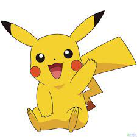

你好
你好
你好
你好
你好
你好
段落
HTML的全称为超文本标记语言，是一种标记语言。
它包括一系列标签．通过这些标签可以将网络上的文档格式统一，使分散的Internet资源连接为一个逻辑整体。
HTML文本是由HTML命令组成的描述性文本，HTML命令可以说明文字，图形、动画、声音、表格、链接等。
换行（浏览源代码）
超文本是一种组织信息的方式，它通过超级链接方法将文本中的文字、图表与其他信息媒体相关联。
这些相互关联的信息媒体可能在同一文本中，也可能是其他文件，或是地理位置相距遥远的某台计算机上的文件。
这种组织信息方式将分布在不同位置的信息资源用随机方式进行连接，为人们查找，检索信息提供方便。
保留格式
HTML的全称为超文本标记语言，是一种标记语言。
它包括一系列标签．通过这些标签可以将网络上的文档格式统一，使分散的Internet资源连接为一个逻辑整体。
HTML文本是由HTML命令组成的描述性文本，HTML命令可以说明文字，图形、动画、声音、表格、链接等。
粗体字
超文本是一种组织信息的方式，它通过超级链接方法将文本中的文字、图表与其他信息媒体相关联。
这些相互关联的信息媒体可能在同一文本中，也可能是其他文件，或是地理位置相距遥远的某台计算机上的文件。
这种组织信息方式将分布在不同位置的信息资源用随机方式进行连接，为人们查找，检索信息提供方便。
斜体字
超文本是一种组织信息的方式，它通过超级链接方法将文本中的文字、图表与其他信息媒体相关联。
这些相互关联的信息媒体可能在同一文本中，也可能是其他文件，或是地理位置相距遥远的某台计算机上的文件。
这种组织信息方式将分布在不同位置的信息资源用随机方式进行连接，为人们查找，检索信息提供方便。
下划线
超文本是一种组织信息的方式，它通过超级链接方法将文本中的文字、图表与其他信息媒体相关联。
这些相互关联的信息媒体可能在同一文本中，也可能是其他文件，或是地理位置相距遥远的某台计算机上的文件。
这种组织信息方式将分布在不同位置的信息资源用随机方式进行连接，为人们查找，检索信息提供方便。
删除字
超文本是一种组织信息的方式，它通过超级链接方法将文本中的文字、图表与其他信息媒体相关联。
这些相互关联的信息媒体可能在同一文本中，也可能是其他文件，或是地理位置相距遥远的某台计算机上的文件。
这种组织信息方式将分布在不同位置的信息资源用随机方式进行连接，为人们查找，检索信息提供方便。
右上角字体
好东西假
2的立方=23
右下角字体
预期价格:
P
t+1
自定义文本样式(大小，颜色）
超文本是一种组织信息的方式，它通过超级链接方法将文本中的文字、图表与其他信息媒体相关联。
这些相互关联的信息媒体可能在同一文本中，也可能是其他文件，或是地理位置相距遥远的某台计算机上的文件。
这种组织信息方式将分布在不同位置的信息资源用随机方式进行连接，为人们查找，检索信息提供方便。
空格(& nbsp)
一个"& nbsp;"等于一个空格
e.g
1和2之间差了10个空格
1 2
小于号
1<2
大于号
2>1
表格
| 199 |
299 |
399 |
| 199 |
29444444444449 |
399 |
| 199 |
299 |
399 |
合并单元格
th标签
| 姓名 |
学号 |
专业 |
| gg |
194999987 |
CS |
| prprpr |
66666666 |
ECON |
thead，tbody & tfoot 标签
| 姓名 |
学号 |
专业 |
| gg |
194999987 |
CS |
| prprpr |
66666666 |
ECON |
图片相关标签img.

你好皮卡丘
超链接
看视频就来这
劝你不要点我~~
 target属性"_self"
target属性"_parent"
target属性"_blank"
target属性"_top"
target属性"_self"
target属性"_parent"
target属性"_blank"
target属性"_top"
列表
无序列表
有序列表
- 日本
- 汽车制造
- 航天
- 动漫
- 韩国
- 娱乐
- 泡菜
- 服务
- 欧美
- 医疗
- 精密仪器
- 汽车制造
- 印度
- 垃圾
- 废物
- 没用
表单
用户注册表单
readonly和disabled
div和span
打开源代码进行观看
HTML中嵌入CSS的三种方式
打开源代码进行观看
浮动样式
皮卡丘是一只电气鼠，全身的皮毛都是黄色的。它的耳朵很长，尖端是黑色的。它有小小的嘴巴，以及黑色的眼睛。它的脸颊上有两个红色的圆形电气囊。它的前爪短而粗，有五个“手指”，后爪则只有三个。它背上有两条褐色的条纹。尾巴是像锯齿状的闪电，与身体相接的部分也有一片褐色的皮毛。
确切地来说皮卡丘是一只老鼠，它跑动的时候是用四条腿着地快速地奔跑，但是更多时候它是站立着的并用两只后脚走路。
因为身体有许多相似点，它也常被和它的进化形和进化前身一起，与正电拍拍、负电拍拍、帕奇利兹、电飞鼠、咚咚鼠、托戈德玛尔和莫鲁贝可联系在一起，被爱好者们并称为电鼠类宝可梦。
戴着帽子的皮卡丘与普通皮卡丘的区别是带上了小智在动画、电影中不同时期带上的帽子。在阿罗拉最强的Ｚ！卡璞・鸣鸣VS皮卡丘!!中，带上小智帽子的皮卡丘把十万伏特转化成特殊的Ｚ招式：千万伏特。而在游戏赠送活动中，带着这八种帽子的皮卡丘初训家正是小智。
换装皮卡丘和普通雌性皮卡丘外表大体类似，只是在尾巴末端有着黑色的心型图案。另外，换装皮卡丘可以通过换装变成五种不同的形态，不同形态仅是服装不同，皮卡丘本身不会改变。
不同地区的皮卡丘在皮毛光泽上有细微差异。关都地区的皮卡丘在阳光下有星星点点的细小光斑，而阿罗拉地区的皮卡丘则皮毛润泽。在大量出现中！皮卡丘山谷!!中，皮卡菈通过这一特点认出小智的皮卡丘来自关都地区。
在超极巨化后，身体变得更像第一世代的胖胖皮卡丘，除此之外，皮卡丘的尾巴变得更加巨大，且多了更多转折处，背上的褐色条纹也变成了三条。
性别差异
主页面：拥有性别差异的宝可梦列表
雌性皮卡丘的尾巴末端为心形（有缺口），而换装皮卡丘必定为雌性，戴着帽子的皮卡丘必定为雄性。然而在动画中，换装皮卡丘则没有性别的限定。
特殊能力
皮卡丘独有的能力是在紧张时通过它脸上的电气袋释放电气。这个电能可用各种方式操纵，常被用在对战中，不过有时它也被皮卡丘用来烤树果。
皮卡丘由于把电能储存在体内，经常需要放电，不论什么目的。否则它可能会被麻痹，甚至死亡。皮卡丘通过尾巴，像避雷针一样安全地释放不需要的能量。烧焦的草丛是皮卡丘居住在这里的标志，这个标志是它释放的电力造成的。如果不能及时释放电力，皮卡丘通常会双颊不断冒出电磁波，并且还会发烧，就像人类的流感一样。这个症状常常是由附近的强电和强磁造成，强电和强磁会影响它的放电的腺体。
皮卡丘和它的家族（皮丘和雷丘），是唯一可以学会伏特攻击的宝可梦。在某些稀少的情况下，皮卡丘还可以学习控制水，在冲浪板的帮助下使用冲浪。还有的时候皮卡丘可以学习其他绝招，例如用气球使出飞翔。皮卡丘有它的专属道具电气球，这个道具可以提升皮卡丘的攻击和特攻，并且如果把携带这个道具的皮卡丘寄放在培育屋，生出的蛋孵化出的皮丘会学会伏特攻击。
皮卡丘的听力很好，这得益于它的大耳朵以及尾巴，皮卡丘在竖起尾巴时可以感知周围的动静。许多家养的皮卡丘可以理解并演绎出人类的话，甚至比大多数宠物狗做得更好。
换装皮卡丘在换上特定装扮后会学会特定的原本无法学会的招式，其中偶像皮卡丘能学会吸取之吻，博士皮卡丘能学会电气场地，面罩摔角手皮卡丘能学会飞身重压，贵妇皮卡丘能学会冰柱坠击，硬摇滚皮卡丘能学会彗星拳。